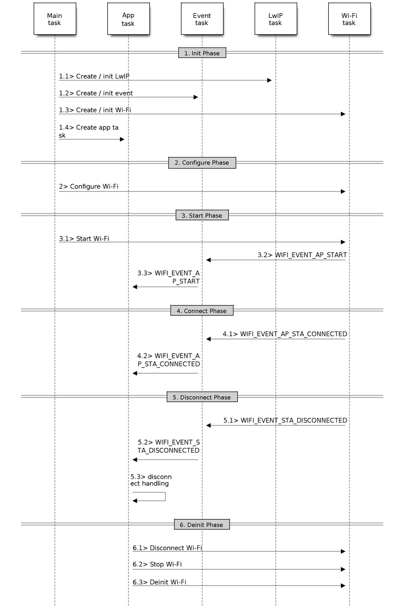

Wi-Fi Driver¶
ESP32 Wi-Fi Feature List¶
- Support Station-only mode, AP-only mode, Station/AP-coexistence mode
- Support IEEE-802.11B, IEEE-802.11G, IEEE802.11N and APIs to configure the protocol mode
- Support WPA/WPA2/WPA2-Enterprise and WPS
- Support AMPDU, HT40, QoS and other key features
- Support Modem-sleep
- Support an Espressif-specific protocol which, in turn, supports up to 1 km of data traffic
- Up to 20 MBit/sec TCP throughput and 30 MBit/sec UDP throughput over the air
- Support Sniffer
- Support set fast_crypto algorithm and normal algorithm switch which used in wifi connect
- Support both fast scan and all channel scan feature
- Support multiple antennas
- Support channel state information
How To Write a Wi-Fi Application¶
Preparation¶
Generally, the most effective way to begin your own Wi-Fi application is to select an example which is similar to your own application, and port the useful part into your project. It is not a MUST but it is strongly recommended that you take some time to read this article first, especially if you want to program a robust Wi-Fi application. This article is supplementary to the Wi-Fi APIs/Examples. It describes the principles of using the Wi-Fi APIs, the limitations of the current Wi-Fi API implementation, and the most common pitfalls in using Wi-Fi. This article also reveals some design details of the Wi-Fi driver. We recommend that you become familiar at least with the following sections: <ESP32 Wi-Fi API Error Code>, <ESP32 Wi-Fi Programming Model>, and <ESP32 Wi-Fi Event Description>.
Setting Wi-Fi Compile-time Options¶
Refer to <Wi-Fi Menuconfig>
Init Wi-Fi¶
Refer to <ESP32 Wi-Fi Station General Scenario>, <ESP32 Wi-Fi AP General Scenario>.
Start/Connect Wi-Fi¶
Refer to <ESP32 Wi-Fi Station General Scenario>, <ESP32 Wi-Fi AP General Scenario>.
Event-Handling¶
Generally, it is easy to write code in “sunny-day” scenarios, such as <WIFI_EVENT_STA_START>, <WIFI_EVENT_STA_CONNECTED> etc. The hard part is to write routines in “rainy-day” scenarios, such as <WIFI_EVENT_STA_DISCONNECTED> etc. Good handling of “rainy-day” scenarios is fundamental to robust Wi-Fi applications. Refer to <ESP32 Wi-Fi Event Description>, <ESP32 Wi-Fi Station General Scenario>, <ESP32 Wi-Fi AP General Scenario>. See also an overview of event handling in ESP-IDF.
Write Error-Recovery Routines Correctly at All Times¶
Just like the handling of “rainy-day” scenarios, a good error-recovery routine is also fundamental to robust Wi-Fi applications. Refer to <ESP32 Wi-Fi API Error Code>
ESP32 Wi-Fi API Error Code¶
- All of the ESP32 Wi-Fi APIs have well-defined return values, namely, the error code. The error code can be categorized into:
- No errors, e.g. ESP_OK means that the API returns successfully
- Recoverable errors, such as ESP_ERR_NO_MEM, etc.
- Non-recoverable, non-critical errors
- Non-recoverable, critical errors
Whether the error is critical or not depends on the API and the application scenario, and it is defined by the API user.
The primary principle to write a robust application with Wi-Fi API is to always check the error code and write the error-handling code. Generally, the error-handling code can be used:
- for recoverable errors, in which case you can write a recoverable-error code. For example, when esp_wifi_start returns ESP_ERR_NO_MEM, the recoverable-error code vTaskDelay can be called, in order to get a microseconds’ delay for another try.
- for non-recoverable, yet non-critical, errors, in which case printing the error code is a good method for error handling.
- for non-recoverable, critical errors, in which case “assert” may be a good method for error handling. For example, if esp_wifi_set_mode returns ESP_ERR_WIFI_NOT_INIT, it means that the Wi-Fi driver is not initialized by esp_wifi_init successfully. You can detect this kind of error very quickly in the application development phase.
In esp_err.h, ESP_ERROR_CHECK checks the return values. It is a rather commonplace error-handling code and can be used as the default error-handling code in the application development phase. However, we strongly recommend that API users write their own error-handling code.
ESP32 Wi-Fi API Parameter Initialization¶
When initializing struct parameters for the API, one of two approaches should be followed: - explicitly set all fields of the parameter or - use get API to get current configuration first, then set application specific fields
Initializing or getting the entire structure is very important because most of the time the value 0 indicates the default value is used. More fields may be added to the struct in the future and initializing these to zero ensures the application will still work correctly after IDF is updated to a new release.
ESP32 Wi-Fi Programming Model¶
The ESP32 Wi-Fi programming model is depicted as follows:
Wi-Fi Programming Model¶
The Wi-Fi driver can be considered a black box that knows nothing about high-layer code, such as the TCP/IP stack, application task, event task, etc. The application task (code) generally calls Wi-Fi driver APIs to initialize Wi-Fi and handles Wi-Fi events when necessary. Wi-Fi driver receives API calls, handles them, and post events to the application.
Wi-Fi event handling is based on the esp_event library. Events are sent by the Wi-Fi driver to the default event loop. Application may handle these events in callbacks registered using esp_event_handler_register(). Wi-Fi events are also handled by esp_netif component to provide a set of default behaviors. For example, when Wi-Fi station connects to an AP, esp_netif will automatically start the DHCP client (by default).
ESP32 Wi-Fi Event Description¶
WIFI_EVENT_WIFI_READY¶
The Wi-Fi driver will never generate this event, which, as a result, can be ignored by the application event callback. This event may be removed in future releases.
WIFI_EVENT_SCAN_DONE¶
The scan-done event is triggered by esp_wifi_scan_start() and will arise in the following scenarios:
- The scan is completed, e.g., the target AP is found successfully, or all channels have been scanned.
- The scan is stopped by esp_wifi_scan_stop().
- The esp_wifi_scan_start() is called before the scan is completed. A new scan will override the current scan and a scan-done event will be generated.
The scan-done event will not arise in the following scenarios:
- It is a blocked scan.
- The scan is caused by esp_wifi_connect().
Upon receiving this event, the event task does nothing. The application event callback needs to call esp_wifi_scan_get_ap_num() and esp_wifi_scan_get_ap_records() to fetch the scanned AP list and trigger the Wi-Fi driver to free the internal memory which is allocated during the scan (do not forget to do this)! Refer to ‘ESP32 Wi-Fi Scan’ for a more detailed description.
WIFI_EVENT_STA_START¶
If esp_wifi_start() returns ESP_OK and the current Wi-Fi mode is Station or AP+Station, then this event will arise. Upon receiving this event, the event task will initialize the LwIP network interface (netif). Generally, the application event callback needs to call esp_wifi_connect() to connect to the configured AP.
WIFI_EVENT_STA_STOP¶
If esp_wifi_stop() returns ESP_OK and the current Wi-Fi mode is Station or AP+Station, then this event will arise. Upon receiving this event, the event task will release the station’s IP address, stop the DHCP client, remove TCP/UDP-related connections and clear the LwIP station netif, etc. The application event callback generally does not need to do anything.
WIFI_EVENT_STA_CONNECTED¶
If esp_wifi_connect() returns ESP_OK and the station successfully connects to the target AP, the connection event will arise. Upon receiving this event, the event task starts the DHCP client and begins the DHCP process of getting the IP address. Then, the Wi-Fi driver is ready for sending and receiving data. This moment is good for beginning the application work, provided that the application does not depend on LwIP, namely the IP address. However, if the application is LwIP-based, then you need to wait until the got ip event comes in.
WIFI_EVENT_STA_DISCONNECTED¶
This event can be generated in the following scenarios:
- When esp_wifi_disconnect(), or esp_wifi_stop(), or esp_wifi_deinit(), or esp_wifi_restart() is called and the station is already connected to the AP.
- When esp_wifi_connect() is called, but the Wi-Fi driver fails to set up a connection with the AP due to certain reasons, e.g. the scan fails to find the target AP, authentication times out, etc. If there are more than one AP with the same SSID, the disconnected event is raised after the station fails to connect all of the found APs.
- When the Wi-Fi connection is disrupted because of specific reasons, e.g., the station continuously loses N beacons, the AP kicks off the station, the AP’s authentication mode is changed, etc.
Upon receiving this event, the default behavior of the event task is: - Shuts down the station’s LwIP netif. - Notifies the LwIP task to clear the UDP/TCP connections which cause the wrong status to all sockets. For socket-based applications, the application callback can choose to close all sockets and re-create them, if necessary, upon receiving this event.
The most common event handle code for this event in application is to call esp_wifi_connect() to reconnect the Wi-Fi. However, if the event is raised because esp_wifi_disconnect() is called, the application should not call esp_wifi_connect() to reconnect. It’s application’s responsibility to distinguish whether the event is caused by esp_wifi_disconnect() or other reasons. Sometimes a better reconnect strategy is required, refer to <Wi-Fi Reconnect> and <Scan When Wi-Fi Is Connecting>.
Another thing deserves our attention is that the default behavior of LwIP is to abort all TCP socket connections on receiving the disconnect. Most of time it is not a problem. However, for some special application, this may not be what they want, consider following scenarios:
- The application creates a TCP connection to maintain the application-level keep-alive data that is sent out every 60 seconds.
- Due to certain reasons, the Wi-Fi connection is cut off, and the <WIFI_EVENT_STA_DISCONNECTED> is raised. According to the current implementation, all TCP connections will be removed and the keep-alive socket will be in a wrong status. However, since the application designer believes that the network layer should NOT care about this error at the Wi-Fi layer, the application does not close the socket.
- Five seconds later, the Wi-Fi connection is restored because esp_wifi_connect() is called in the application event callback function. Moreover, the station connects to the same AP and gets the same IPV4 address as before.
- Sixty seconds later, when the application sends out data with the keep-alive socket, the socket returns an error and the application closes the socket and re-creates it when necessary.
In above scenario, ideally, the application sockets and the network layer should not be affected, since the Wi-Fi connection only fails temporarily and recovers very quickly. The application can enable “Keep TCP connections when IP changed” via LwIP menuconfig.
WIFI_EVENT_STA_AUTHMODE_CHANGE¶
This event arises when the AP to which the station is connected changes its authentication mode, e.g., from no auth to WPA. Upon receiving this event, the event task will do nothing. Generally, the application event callback does not need to handle this either.
IP_EVENT_STA_GOT_IP¶
This event arises when the DHCP client successfully gets the IPV4 address from the DHCP server, or when the IPV4 address is changed. The event means that everything is ready and the application can begin its tasks (e.g., creating sockets).
The IPV4 may be changed because of the following reasons:
- The DHCP client fails to renew/rebind the IPV4 address, and the station’s IPV4 is reset to 0.
- The DHCP client rebinds to a different address.
- The static-configured IPV4 address is changed.
Whether the IPV4 address is changed or NOT is indicated by field ip_change of ip_event_got_ip_t.
The socket is based on the IPV4 address, which means that, if the IPV4 changes, all sockets relating to this IPV4 will become abnormal. Upon receiving this event, the application needs to close all sockets and recreate the application when the IPV4 changes to a valid one.
IP_EVENT_GOT_IP6¶
This event arises when the IPV6 SLAAC support auto-configures an address for the ESP32, or when this address changes. The event means that everything is ready and the application can begin its tasks (e.g., creating sockets).
IP_STA_LOST_IP¶
This event arises when the IPV4 address become invalid.
IP_STA_LOST_IP doesn’t arise immediately after the WiFi disconnects, instead it starts an IPV4 address lost timer, if the IPV4 address is got before ip lost timer expires, IP_EVENT_STA_LOST_IP doesn’t happen. Otherwise, the event arises when IPV4 address lost timer expires.
Generally the application don’t need to care about this event, it is just a debug event to let the application know that the IPV4 address is lost.
WIFI_EVENT_AP_START¶
Similar to <WIFI_EVENT_STA_START>.
WIFI_EVENT_AP_STOP¶
Similar to <WIFI_EVENT_STA_STOP>.
WIFI_EVENT_AP_STACONNECTED¶
Every time a station is connected to ESP32 AP, the <WIFI_EVENT_AP_STACONNECTED> will arise. Upon receiving this event, the event task will do nothing, and the application callback can also ignore it. However, you may want to do something, for example, to get the info of the connected STA, etc.
WIFI_EVENT_AP_STADISCONNECTED¶
This event can happen in the following scenarios:
- The application calls esp_wifi_disconnect(), or esp_wifi_deauth_sta(), to manually disconnect the station.
- The Wi-Fi driver kicks off the station, e.g. because the AP has not received any packets in the past five minutes, etc.
- The station kicks off the AP.
When this event happens, the event task will do nothing, but the application event callback needs to do something, e.g., close the socket which is related to this station, etc.
WIFI_EVENT_AP_PROBEREQRECVED¶
This event is disabled by default. The application can enable it via API esp_wifi_set_event_mask(). When this event is enabled, it will be raised each time the AP receives a probe request.
ESP32 Wi-Fi Station General Scenario¶
Below is a “big scenario” which describes some small scenarios in Station mode:
Sample Wi-Fi Event Scenarios in Station Mode¶
1. Wi-Fi/LwIP Init Phase¶
- s1.1: The main task calls esp_netif_init() to create an LwIP core task and initialize LwIP-related work.
- s1.2: The main task calls esp_event_loop_init() to create a system Event task and initialize an application event’s callback function. In the scenario above, the application event’s callback function does nothing but relaying the event to the application task.
- s1.3: The main task calls esp_netif_create_default_wifi_ap() or esp_netif_create_default_wifi_sta() to create default network interface instance binding station or AP with TCP/IP stack.
- s1.4: The main task calls esp_wifi_init() to create the Wi-Fi driver task and initialize the Wi-Fi driver.
- s1.5: The main task calls OS API to create the application task.
Step 1.1~1.5 is a recommended sequence that initializes a Wi-Fi-/LwIP-based application. However, it is NOT a must-follow sequence, which means that you can create the application task in step 1.1 and put all other initializations in the application task. Moreover, you may not want to create the application task in the initialization phase if the application task depends on the sockets. Rather, you can defer the task creation until the IP is obtained.
2. Wi-Fi Configuration Phase¶
Once the Wi-Fi driver is initialized, you can start configuring the Wi-Fi driver. In this scenario, the mode is Station, so you may need to call esp_wifi_set_mode(WIFI_MODE_STA) to configure the Wi-Fi mode as Station. You can call other esp_wifi_set_xxx APIs to configure more settings, such as the protocol mode, country code, bandwidth, etc. Refer to <ESP32 Wi-Fi Configuration>.
Generally, we configure the Wi-Fi driver before setting up the Wi-Fi connection, but this is NOT mandatory, which means that you can configure the Wi-Fi connection anytime, provided that the Wi-Fi driver is initialized successfully. However, if the configuration does not need to change after the Wi-Fi connection is set up, you should configure the Wi-Fi driver at this stage, because the configuration APIs (such as esp_wifi_set_protocol) will cause the Wi-Fi to reconnect, which may not be desirable.
If the Wi-Fi NVS flash is enabled by menuconfig, all Wi-Fi configuration in this phase, or later phases, will be stored into flash. When the board powers on/reboots, you do not need to configure the Wi-Fi driver from scratch. You only need to call esp_wifi_get_xxx APIs to fetch the configuration stored in flash previously. You can also configure the Wi-Fi driver if the previous configuration is not what you want.
3. Wi-Fi Start Phase¶
- s3.1: Call esp_wifi_start to start the Wi-Fi driver.
- s3.2: The Wi-Fi driver posts <WIFI_EVENT_STA_START> to the event task; then, the event task will do some common things and will call the application event callback function.
- s3.3: The application event callback function relays the <WIFI_EVENT_STA_START> to the application task. We recommend that you call esp_wifi_connect(). However, you can also call esp_wifi_connect() in other phrases after the <WIFI_EVENT_STA_START> arises.
4. Wi-Fi Connect Phase¶
- s4.1: Once esp_wifi_connect() is called, the Wi-Fi driver will start the internal scan/connection process.
- s4.2: If the internal scan/connection process is successful, the <WIFI_EVENT_STA_CONNECTED> will be generated. In the event task, it starts the DHCP client, which will finally trigger the DHCP process.
- s4.3: In the above-mentioned scenario, the application event callback will relay the event to the application task. Generally, the application needs to do nothing, and you can do whatever you want, e.g., print a log, etc.
In step 4.2, the Wi-Fi connection may fail because, for example, the password is wrong, the AP is not found, etc. In a case like this, <WIFI_EVENT_STA_DISCONNECTED> will arise and the reason for such a failure will be provided. For handling events that disrupt Wi-Fi connection, please refer to phase 6.
5. Wi-Fi ‘Got IP’ Phase¶
- s5.1: Once the DHCP client is initialized in step 4.2, the got IP phase will begin.
- s5.2: If the IP address is successfully received from the DHCP server, then <IP_EVENT_STA_GOT_IP> will arise and the event task will perform common handling.
- s5.3: In the application event callback, <IP_EVENT_STA_GOT_IP> is relayed to the application task. For LwIP-based applications, this event is very special and means that everything is ready for the application to begin its tasks, e.g. creating the TCP/UDP socket, etc. A very common mistake is to initialize the socket before <IP_EVENT_STA_GOT_IP> is received. DO NOT start the socket-related work before the IP is received.
6. Wi-Fi Disconnect Phase¶
- s6.1: When the Wi-Fi connection is disrupted, e.g. because the AP is powered off, the RSSI is poor, etc., <WIFI_EVENT_STA_DISCONNECTED> will arise. This event may also arise in phase 3. Here, the event task will notify the LwIP task to clear/remove all UDP/TCP connections. Then, all application sockets will be in a wrong status. In other words, no socket can work properly when this event happens.
- s6.2: In the scenario described above, the application event callback function relays <WIFI_EVENT_STA_DISCONNECTED> to the application task. We recommend that esp_wifi_connect() be called to reconnect the Wi-Fi, close all sockets and re-create them if necessary. Refer to <WIFI_EVENT_STA_DISCONNECTED>.
7. Wi-Fi IP Change Phase¶
- s7.1: If the IP address is changed, the <IP_EVENT_STA_GOT_IP> will arise with “ip_change” set to true.
- s7.2: This event is important to the application. When it occurs, the timing is good for closing all created sockets and recreating them.
8. Wi-Fi Deinit Phase¶
- s8.1: Call esp_wifi_disconnect() to disconnect the Wi-Fi connectivity.
- s8.2: Call esp_wifi_stop() to stop the Wi-Fi driver.
- s8.3: Call esp_wifi_deinit() to unload the Wi-Fi driver.
ESP32 Wi-Fi AP General Scenario¶
Below is a “big scenario” which describes some small scenarios in AP mode:
Sample Wi-Fi Event Scenarios in AP Mode¶
ESP32 Wi-Fi Scan¶
Currently, the esp_wifi_scan_start() API is supported only in Station or Station+AP mode.
Scan Type¶
| Mode | Description |
|---|---|
| Active Scan | Scan by sending a probe request. The default scan is an active scan. |
| Passive Scan | No probe request is sent out. Just switch to the specific channel and wait for a beacon. Application can enable it via the scan_type field of wifi_scan_config_t. |
| Foreground Scan | This scan is applicable when there is no Wi-Fi connection in Station mode. Foreground or background scanning is controlled by the Wi-Fi driver and cannot be configured by the application. |
| Background Scan | This scan is applicable when there is a Wi-Fi connection in Station mode or in Station+AP mode. Whether it is a foreground scan or background scan depends on the Wi-Fi driver and cannot be configured by the application. |
| All-Channel Scan | It scans all of the channels. If the channel field of wifi_scan_config_t is set to 0, it is an all-channel scan. |
|
It scans specific channels only. If the channel field of wifi_scan_config_t set to 1, it is a specific-channel scan. |
- The scan modes in above table can be combined arbitrarily, so we totally have 8 different scans:
- All-Channel Background Active Scan
- All-Channel Background Passive Scan
- All-Channel Foreground Active Scan
- All-Channel Foreground Passive Scan
- Specific-Channel Background Active Scan
- Specific-Channel Background Passive Scan
- Specific-Channel Foreground Active Scan
- Specific-Channel Foreground Passive Scan
Scan Configuration¶
The scan type and other per-scan attributes are configured by esp_wifi_scan_start. The table below provides a detailed description of wifi_scan_config_t.
| Field | Description |
|---|---|
| ssid | If the SSID is not NULL, it is only the AP with the same SSID that can be scanned. |
| bssid | If the BSSID is not NULL, it is only the AP with the same BSSID that can be scanned. |
| channel | If “channel” is 0, there will be an all-channel scan; otherwise, there will be a specific-channel scan. |
| show_hidden | If “show_hidden” is 0, the scan ignores the AP with a hidden SSID; otherwise, the scan considers the hidden AP a normal one. |
| scan_type | If “scan_type” is WIFI_SCAN_TYPE_ACTIVE, the scan is “active”; otherwise, it is a “passive” one. |
| scan_time | This field is used to control how long the scan dwells on each channel. For passive scans, scan_time.passive designates the dwell time for each channel. For active scans, dwell times for each channel are listed in the table below. Here, min is short for scan time.active.min and max is short for scan_time.active.max.
If you want to improve the performance of the the scan, you can try to modify these two parameters. |
There also some global scan attributes which is configured by API esp_wifi_set_config, refer to Station Basic Configuration
Scan All APs In All Channels(foreground)¶
Scenario:
Foreground Scan of all Wi-Fi Channels¶
The scenario above describes an all-channel, foreground scan. The foreground scan can only occur in Station mode where the station does not connect to any AP. Whether it is a foreground or background scan is totally determined by the Wi-Fi driver, and cannot be configured by the application.
Detailed scenario description:
Scan Configuration Phase¶
- s1.1: Call esp_wifi_set_country() to set the country info if the default country info is not what you want, refer to <Wi-Fi Country Code>.
- s1.2: Call esp_wifi_scan_start() to configure the scan. To do so, you can refer to <Scan Configuration>. Since this is an all-channel scan, just set the SSID/BSSID/channel to 0.
Wi-Fi Driver’s Internal Scan Phase¶
- s2.1: The Wi-Fi driver switches to channel 1, in case the scan type is WIFI_SCAN_TYPE_ACTIVE, and broadcasts a probe request. Otherwise, the Wi-Fi will wait for a beacon from the APs. The Wi-Fi driver will stay in channel 1 for some time. The dwell time is configured in min/max time, with default value being 120 ms.
- s2.2: The Wi-Fi driver switches to channel 2 and performs the same operation as in step 2.1.
- s2.3: The Wi-Fi driver scans the last channel N, where N is determined by the country code which is configured in step 1.1.
Scan-Done Event Handling Phase¶
- s3.1: When all channels are scanned, <WIFI_EVENT_SCAN_DONE> will arise.
- s3.2: The application’s event callback function notifies the application task that <WIFI_EVENT_SCAN_DONE> is received. esp_wifi_scan_get_ap_num() is called to get the number of APs that have been found in this scan. Then, it allocates enough entries and calls esp_wifi_scan_get_ap_records() to get the AP records. Please note that the AP records in the Wi-Fi driver will be freed, once esp_wifi_scan_get_ap_records() is called. Do not call esp_wifi_scan_get_ap_records() twice for a single scan-done event. If esp_wifi_scan_get_ap_records() is not called when the scan-done event occurs, the AP records allocated by the Wi-Fi driver will not be freed. So, make sure you call esp_wifi_scan_get_ap_records(), yet only once.
Scan All APs on All Channels(background)¶
Scenario:
Background Scan of all Wi-Fi Channels¶
The scenario above is an all-channel background scan. Compared to Scan All APs In All Channels(foreground) , the difference in the all-channel background scan is that the Wi-Fi driver will scan the back-to-home channel for 30 ms before it switches to the next channel to give the Wi-Fi connection a chance to transmit/receive data.
Scan for a Specific AP in All Channels¶
Scenario:
Scan of specific Wi-Fi Channels¶
This scan is similar to Scan All APs In All Channels(foreground). The differences are:
- s1.1: In step 1.2, the target AP will be configured to SSID/BSSID.
- s2.1~s2.N: Each time the Wi-Fi driver scans an AP, it will check whether it is a target AP or not. If the scan is WIFI_FAST_SCAN scan and the target AP is found, then the scan-done event will arise and scanning will end; otherwise, the scan will continue. Please note that the first scanned channel may not be channel 1, because the Wi-Fi driver optimizes the scanning sequence.
If there are multiple APs which match the target AP info, for example, if we happen to scan two APs whose SSID is “ap”. If the scan is WIFI_FAST_SCAN, then only the first scanned “ap” will be found, if the scan is WIFI_ALL_CHANNEL_SCAN, both “ap” will be found and the station will connect the “ap” according to the configured strategy, refer to Station Basic Configuration.
You can scan a specific AP, or all of them, in any given channel. These two scenarios are very similar.
Scan in Wi-Fi Connect¶
When esp_wifi_connect() is called, then the Wi-Fi driver will try to scan the configured AP first. The scan in “Wi-Fi Connect” is the same as Scan for a Specific AP In All Channels, except that no scan-done event will be generated when the scan is completed. If the target AP is found, then the Wi-Fi driver will start the Wi-Fi connection; otherwise, <WIFI_EVENT_STA_DISCONNECTED> will be generated. Refer to Scan for a Specific AP in All Channels
Scan In Blocked Mode¶
If the block parameter of esp_wifi_scan_start() is true, then the scan is a blocked one, and the application task will be blocked until the scan is done. The blocked scan is similar to an unblocked one, except that no scan-done event will arise when the blocked scan is completed.
Parallel Scan¶
Two application tasks may call esp_wifi_scan_start() at the same time, or the same application task calls esp_wifi_scan_start() before it gets a scan-done event. Both scenarios can happen. However, the Wi-Fi driver does not support multiple concurrent scans adequately. As a result, concurrent scans should be avoided. Support for concurrent scan will be enhanced in future releases, as the ESP32’s Wi-Fi functionality improves continuously.
Scan When Wi-Fi Is Connecting¶
The esp_wifi_scan_start() fails immediately if the Wi-Fi is in connecting process because the connecting has higher priority than the scan. If scan fails because of connecting, the recommended strategy is to delay sometime and retry scan again, the scan will succeed once the connecting is completed.
However, the retry/delay strategy may not work all the time. Considering following scenario: - The station is connecting a non-existed AP or if the station connects the existed AP with a wrong password, it always raises the event <WIFI_EVENT_STA_DISCONNECTED>. - The application call esp_wifi_connect() to do reconnection on receiving the disconnect event. - Another application task, e.g. the console task, call esp_wifi_scan_start() to do scan, the scan always fails immediately because the station is keeping connecting. - When scan fails, the application simply delay sometime and retry the scan.
In above scenario the scan will never succeed because the connecting is in process. So if the application supports similar scenario, it needs to implement a better reconnect strategy. E.g. - The application can choose to define a maximum continuous reconnect counter, stop reconnect once the reconnect reaches the max counter. - The application can choose to do reconnect immediately in the first N continous reconnect, then give a delay sometime and reconnect again.
The application can define its own reconnect strategy to avoid the scan starve to death. Refer to <Wi-Fi Reconnect>.
ESP32 Wi-Fi Station Connecting Scenario¶
This scenario only depicts the case when there is only one target AP are found in scan phase, for the scenario that more than one AP with the same SSID are found, refer to <ESP32 Wi-Fi Station Connecting When Multiple APs Are Found>.
Generally, the application does not need to care about the connecting process. Below is a brief introduction to the process for those who are really interested.
Scenario:
Wi-Fi Station Connecting Process¶
Scan Phase¶
- s1.1, The Wi-Fi driver begins scanning in “Wi-Fi Connect”. Refer to <Scan in Wi-Fi Connect> for more details.
- s1.2, If the scan fails to find the target AP, <WIFI_EVENT_STA_DISCONNECTED> will arise and the reason-code will be WIFI_REASON_NO_AP_FOUND. Refer to <Wi-Fi Reason Code>.
Auth Phase¶
- s2.1, The authentication request packet is sent and the auth timer is enabled.
- s2.2, If the authentication response packet is not received before the authentication timer times out, <WIFI_EVENT_STA_DISCONNECTED> will arise and the reason-code will be WIFI_REASON_AUTH_EXPIRE. Refer to <Wi-Fi Reason Code>.
- s2.3, The auth-response packet is received and the auth-timer is stopped.
- s2.4, The AP rejects authentication in the response and <WIFI_EVENT_STA_DISCONNECTED> arises, while the reason-code is WIFI_REASON_AUTH_FAIL or the reasons specified by the AP. Refer to <Wi-Fi Reason Code>.
Association Phase¶
- s3.1, The association request is sent and the association timer is enabled.
- s3.2, If the association response is not received before the association timer times out, <WIFI_EVENT_STA_DISCONNECTED> will arise and the reason-code will be WIFI_REASON_ASSOC_EXPIRE. Refer to <Wi-Fi Reason Code>.
- s3.3, The association response is received and the association timer is stopped.
- s3.4, The AP rejects the association in the response and <WIFI_EVENT_STA_DISCONNECTED> arises, while the reason-code is the one specified in the association response. Refer to <Wi-Fi Reason Code>.
Four-way Handshake Phase¶
- s4.1, The four-way handshake is sent out and the association timer is enabled.
- s4.2, If the association response is not received before the association timer times out, <WIFI_EVENT_STA_DISCONNECTED> will arise and the reason-code will be WIFI_REASON_ASSOC_EXPIRE. Refer to <Wi-Fi Reason Code>.
- s4.3, The association response is received and the association timer is stopped.
- s4.4, The AP rejects the association in the response and <WIFI_EVENT_STA_DISCONNECTED> arises and the reason-code will be the one specified in the association response. Refer to <Wi-Fi Reason Code>.
Wi-Fi Reason Code¶
The table below shows the reason-code defined in ESP32. The first column is the macro name defined in esp_wifi_types.h. The common prefix WIFI_REASON is removed, which means that UNSPECIFIED actually stands for WIFI_REASON_UNSPECIFIED and so on. The second column is the value of the reason. The third column is the standard value to which this reason is mapped in section 8.4.1.7 of ieee802.11-2012. (For more information, refer to the standard mentioned above.) The last column is a description of the reason.
| Reason code | Value | Mapped To | Description |
|---|---|---|---|
| UNSPECIFIED | 1 | 1 | Generally, it means an internal failure, e.g., the memory runs out, the internal TX fails, or the reason is received from the remote side, etc. |
| AUTH_EXPIRE | 2 | 2 | The previous authentication is no longer valid. For the ESP32 Station, this reason is reported when:
For the ESP32 AP, this reason is reported when:
|
| AUTH_LEAVE | 3 | 3 | De-authenticated, because the sending STA is leaving (or has left). For the ESP32 Station, this reason is reported when:
|
| ASSOC_EXPIRE | 4 | 4 | Disassociated due to inactivity. For the ESP32 Station, this reason is reported when:
For the ESP32 AP, this reason is reported when:
|
| ASSOC_TOOMANY | 5 | 5 | Disassociated, because the AP is unable to handle all currently associated STAs at the same time. For the ESP32 Station, this reason is reported when:
For the ESP32 AP, this reason is reported when:
|
| NOT_AUTHED | 6 | 6 | Class-2 frame received from a non-authenticated STA. For the ESP32 Station, this reason is reported when:
For the ESP32 AP, this reason is reported when:
|
| NOT_ASSOCED | 7 | 7 | Class-3 frame received from a non-associated STA. For the ESP32 Station, this reason is reported when:
For the ESP32 AP, this reason is reported when:
|
| ASSOC_LEAVE | 8 | 8 | Disassociated, because the sending STA is leaving (or has left) BSS. For the ESP32 Station, this reason is reported when:
|
| ASSOC_NOT_AUTHED | 9 | 9 | STA requesting (re)association is not authenticated by the responding STA. For the ESP32 Station, this reason is reported when:
For the ESP32 AP, this reason is reported when:
|
| DISASSOC_PWRCAP_BAD | 10 | 10 | Disassociated, because the information in the Power Capability element is unacceptable. For the ESP32 Station, this reason is reported when:
|
| DISASSOC_SUPCHAN_BAD | 11 | 11 | Disassociated, because the information in the Supported Channels element is unacceptable. For the ESP32 Station, this reason is reported when:
|
| IE_INVALID | 13 | 13 | Invalid element, i.e. an element whose content does not meet the specifications of the Standard in Clause 8. For the ESP32 Station, this reason is reported when:
For the ESP32 AP, this reason is reported when:
|
| MIC_FAILURE | 14 | 14 | Message integrity code (MIC) failure. For the ESP32 Station, this reason is reported when:
|
| 4WAY_HANDSHAKE_TIMEOUT | 15 | 15 | Four-way handshake times out. For legacy reasons, in ESP32 this reason-code is replaced with WIFI_REASON_HANDSHAKE_TIMEOUT. For the ESP32 Station, this reason is reported when:
|
| GROUP_KEY_UPDATE_TIMEOUT | 16 | 16 | Group-Key Handshake times out. For the ESP32 station, this reason is reported when:
|
| IE_IN_4WAY_DIFFERS | 17 | 17 | The element in the four-way handshake is different from the (Re-)Association Request/Probe and Response/Beacon frame. For the ESP32 station, this reason is reported when:
|
| GROUP_CIPHER_INVALID | 18 | 18 | Invalid group cipher. For the ESP32 Station, this reason is reported when:
|
| PAIRWISE_CIPHER_INVALID | 19 | 19 | Invalid pairwise cipher. For the ESP32 Station, this reason is reported when:
|
| AKMP_INVALID | 20 | 20 | Invalid AKMP. For the ESP32 Station, this reason is reported when:
|
| UNSUPP_RSN_IE_VERSION | 21 | 21 | Unsupported RSNE version. For the ESP32 Station, this reason is reported when:
|
| INVALID_RSN_IE_CAP | 22 | 22 | Invalid RSNE capabilities. For the ESP32 Station, this reason is reported when:
|
| 802_1X_AUTH_FAILED | 23 | 23 | IEEE 802.1X. authentication failed. For the ESP32 Station, this reason is reported when:
For the ESP32 AP, this reason is reported when:
|
| CIPHER_SUITE_REJECTED | 24 | 24 | Cipher suite rejected due to security policies. For the ESP32 Station, this reason is reported when:
|
| BEACON_TIMEOUT | 200 | reserved | Espressif-specific Wi-Fi reason-code: when the station loses N beacons continuously, it will disrupt the connection and report this reason. |
| NO_AP_FOUND | 201 | reserved | Espressif-specific Wi-Fi reason-code: when the station fails to scan the target AP, this reason code will be reported. |
| AUTH_FAIL | 202 | reserved | Espressif-specific Wi-Fi reason-code: the authentication fails, but not because of a timeout. |
| ASSOC_FAIL | 203 | reserved | Espressif-specific Wi-Fi reason-code: the association fails, but not because of ASSOC_EXPIRE or ASSOC_TOOMANY. |
| HANDSHAKE_TIMEOUT | 204 | reserved | Espressif-specific Wi-Fi reason-code: the handshake fails for the same reason as that in WIFI_REASON_4WAY_HANDSHAKE_TIMEOUT. |
ESP32 Wi-Fi Station Connecting When Multiple APs Are Found¶
This scenario is similar as <ESP32 Wi-Fi Station Connecting Scenario>, the difference is the station will not raise the event <WIFI_EVENT_STA_DISCONNECTED> unless it fails to connect all of the found APs.
Wi-Fi Reconnect¶
The station may disconnect due to many reasons, e.g. the connected AP is restarted etc. It’s the application’s responsibility to do the reconnect. The recommended reconnect strategy is to call esp_wifi_connect() on receiving event <WIFI_EVENT_STA_DISCONNECTED>.
Sometimes the application needs more complex reconnect strategy: - If the disconnect event is raised because the esp_wifi_disconnect() is called, the application may not want to do reconnect. - If the esp_wifi_scan_start() may be called at anytime, a better reconnect strategy is necessary, refer to <Scan When Wi-Fi Is Connecting>.
Another thing we need to consider is the reconnect may not connect the same AP if there are more than one APs with the same SSID. The reconnect always select current best APs to connect.
Wi-Fi Beacon Timeout¶
The beacon timeout mechanism is used by ESP32 station to detect whether the AP is alive or not. If the station continuously loses 60 beacons of the connected AP, the beacon timeout happens.
After the beacon timeout happens, the station sends 5 probe requests to AP, it disconnects the AP and raises the event <WIFI_EVENT_STA_DISCONNECTED> if still no probe response or beacon is received from AP.
ESP32 Wi-Fi Configuration¶
All configurations will be stored into flash when the Wi-Fi NVS is enabled; otherwise, refer to <Wi-Fi NVS Flash>.
Wi-Fi Mode¶
Call esp_wifi_set_mode() to set the Wi-Fi mode.
| Mode | Description |
|---|---|
| WIFI_MODE_NULL | NULL mode: in this mode, the internal data struct is not allocated to the station and the AP, while both the station and AP interfaces are not initialized for RX/TX Wi-Fi data. Generally, this mode is used for Sniffer, or when you only want to stop both the STA and the AP without calling esp_wifi_deinit() to unload the whole Wi-Fi driver. |
| WIFI_MODE_STA | Station mode: in this mode, esp_wifi_start() will init the internal station data, while the station’s interface is ready for the RX and TX Wi-Fi data. After esp_wifi_connect() is called, the STA will connect to the target AP. |
| WIFI_MODE_AP | AP mode: in this mode, esp_wifi_start() will init the internal AP data, while the AP’s interface is ready for RX/TX Wi-Fi data. Then, the Wi-Fi driver starts broad- casting beacons, and the AP is ready to get connected to other stations. |
| WIFI_MODE_APSTA | Station-AP coexistence mode: in this mode, esp_wifi_start() will simultaneously init both the station and the AP. This is done in station mode and AP mode. Please note that the channel of the external AP, which the ESP32 Station is connected to, has higher priority over the ESP32 AP channel. |
Station Basic Configuration¶
API esp_wifi_set_config() can be used to configure the station. The table below describes the fields in detail.
| Field | Description |
|---|---|
| ssid | This is the SSID of the target AP, to which the station wants to connect to. |
| password | Password of the target AP |
| scan_method | For WIFI_FAST_SCAN scan, the scan ends when the first matched AP is found, for WIFI_ALL_CHANNEL_SCAN, the scan finds all matched APs in all channels. The default scan is WIFI_FAST_SCAN. |
| bssid_set | If bssid_set is 0, the station connects to the AP whose SSID is the same as the field “ssid”, while the field “bssid” is ignored. In all other cases, the station connects to the AP whose SSID is the same as the “ssid” field, while its BSSID is the same the “bssid” field . |
| bssid | This is valid only when bssid_set is 1; see field “bssid_set”. |
| channel | If the channel is 0, the station scans the channel 1~N to search for the target AP; otherwise, the station starts by scanning the channel whose value is the same as that of the “channel” field, and then scans others to find the target AP. If you do not know which channel the target AP is running on, set it to 0. |
| sort_method | This field is only for WIFI_ALL_CHANNEL_SCAN If the sort_method is WIFI_CONNECT_AP_BY_SIGNAL, all matched APs are sorted by signal, for AP with best signal will be connected firstly. E.g. if the station want to connect AP whose ssid is “apxx”, the scan finds two AP whose ssid equals to “apxx”, the first AP’s signal is -90dBm, the second AP’s signal is -30dBm, the station connects the second AP firstly, it doesn’t connect the first one unless it fails to connect the second one. If the sort_method is WIFI_CONNECT_AP_BY_SECURITY, all matched APs are sorted by security. E.g. if the station wants to connect AP whose ssid is “apxx”, the scan finds two AP whose ssid is “apxx”, the security of the first found AP is open while the second one is WPA2, the stations connects to the second AP firstly, it doesn’t connect the second one unless it fails to connect the first one. |
| threshold | The threshold is used to filter the found AP, if the RSSI or security mode is less than the configured threshold, the AP will be discard. If the RSSI set to 0, it means default threshold, the default RSSI threshold is -127dBm. If the authmode threshold is set to 0, it means default threshold, the default authmode threshold is open. |
AP Basic Configuration¶
API esp_wifi_set_config() can be used to configure the AP. The table below describes the fields in detail.
| Field | Description |
|---|---|
| ssid | SSID of AP; if the ssid[0] is 0xFF and ssid[1] is 0xFF, the AP defaults the SSID to ESP_aabbcc, where “aabbcc” is the last three bytes of the AP MAC. |
| password | Password of AP; if the auth mode is WIFI_AUTH_OPEN, this field will be ignored. |
| ssid_len | Length of SSID; if ssid_len is 0, check the SSID until there is a termination character. If ssid_len > 32, change it to 32; otherwise, set the SSID length according to ssid_len. |
| channel | Channel of AP; if the channel is out of range, the Wi-Fi driver defaults the channel to channel 1. So, please make sure the channel is within the required range. For more details, refer to <Wi-Fi Country Code>. |
| authmode | Auth mode of ESP32 AP; currently, ESP32 Wi-Fi does not support AUTH_WEP. If the authmode is an invalid value, AP defaults the value to WIFI_AUTH_OPEN. |
| ssid_hidden | If ssid_hidden is 1, AP does not broadcast the SSID; otherwise, it does broadcast the SSID. |
| max_connection | Currently, ESP32 Wi-Fi supports up to 10 Wi-Fi connections. If max_connection > 10, AP defaults the value to 10. |
| beacon_interval | Beacon interval; the value is 100 ~ 60000 ms, with default value being 100 ms. If the value is out of range, AP defaults it to 100 ms. |
Wi-Fi Protocol Mode¶
Currently, the IDF supports the following protocol modes:
| Protocol Mode | Description |
|---|---|
| 802.11 B | Call esp_wifi_set_protocol(ifx, WIFI_PROTOCOL_11B) to set the station/AP to 802.11B-only mode. |
| 802.11 BG | Call esp_wifi_set_protocol(ifx, WIFI_PROTOCOL_11B|WIFI_ PROTOCOL_11G) to set the station/AP to 802.11BG mode. |
| 802.11 BGN | Call esp_wifi_set_protocol(ifx, WIFI_PROTOCOL_11B| WIFI_PROTOCOL_11G|WIFI_PROTOCOL_11N) to set the station/ AP to BGN mode. |
| 802.11 BGNLR | Call esp_wifi_set_protocol(ifx, WIFI_PROTOCOL_11B| WIFI_PROTOCOL_11G|WIFI_PROTOCOL_11N|WIFI_PROTOCOL_LR) to set the station/AP to BGN and the Espressif-specific mode. |
| 802.11 LR | Call esp_wifi_set_protocol(ifx, WIFI_PROTOCOL_LR) to set the station/AP only to the Espressif-specific mode. This mode is an Espressif-patented mode which can achieve a one-kilometer line of sight range. Please, make sure both the station and the AP are connected to an ESP32 device |
Long Range (LR)¶
Long Range (LR) mode is an Espressif-patented Wi-Fi mode which can achieve a one-kilometer line of sight range. It has better reception sensitivity, stronger anti-interference ability and longer transmission distance than the traditional 802.11B mode.
LR Compitability¶
Since LR is Espressif unique Wi-Fi mode, only ESP32 devices can transmit and receive the LR data. In other words, the ESP32 device should NOT transmit the data in LR data rate if the connected device doesn’t support LR. The application can achieve this by configuring suitable Wi-Fi mode. If the negotiated mode supports LR, the ESP32 may transmit data in LR rate, otherwise, ESP32 will transmit all data in traditional Wi-Fi data rate.
Following table depicts the Wi-Fi mode negotiation:
| APSTA | BGN | BG | B | BGNLR | BGLR | BLR | LR |
|---|---|---|---|---|---|---|---|
| BGN | BGN | BG | B | BGN | BG | B | |
| BG | BG | BG | B | BG | BG | B | |
| B | B | B | B | B | B | B | |
| BGNLR | BGNLR | BGLR | BLR | LR | |||
| BGLR | BGLR | BGLR | BLR | LR | |||
| BLR | BLR | BLR | BLR | LR | |||
| LR | LR | LR | LR | LR |
In above table, the row is the Wi-Fi mode of AP and the column is the Wi-Fi mode of station. The “-” indicates Wi-Fi mode of the AP and station are not compatible.
- According to the table, we can conclude that:
- For LR enabled in ESP32 AP, it’s incompatible with traditional 802.11 mode because the beacon is sent in LR mode.
- For LR enabled in ESP32 station and the mode is NOT LR only mode, it’s compatible with traditional 802.11 mode.
- If both station and AP are ESP32 devices and both of them enable LR mode, the negotiated mode supports LR.
If the negotiated Wi-Fi mode supports both traditional 802.11 mode and LR mode, it’s the WiFi driver’s responsibility to automatically select the best data rate in different Wi-Fi mode and the application don’t need to care about it.
LR Impacts to Traditional Wi-Fi device¶
- The data transmission in LR rate has no impacts on the traditional Wi-Fi device because:
- The CCA and backoff process in LR mode are consistent with 802.11 specification.
- The traditional Wi-Fi device can detect the LR signal via CCA and do backoff.
In other words, the impact transmission in LR mode is similar as the impact in 802.11B mode.
LR Transmission Distance¶
The reception sensitivity of LR has about 4 dB gain than the traditional 802.11 B mode, theoretically the transmission distance is about 2 to 2.5 times the distance of 11B.
LR Throughput¶
The LR rate has very limited throughput because the raw PHY data rate LR is 1/2 Mbits and 1/4 Mbits.
When to Use LR¶
- The general conditions for using LR are:
- Both the AP and station are ESP32 devices.
- Long distance WiFi connection and data transmission is required.
- Data throughput requirements are very small, such as remote device control, etc.
Wi-Fi Country Code¶
Call esp_wifi_set_country() to set the country info. The table below describes the fields in detail, please consult local 2.4GHz RF operating regulations before configuring these fields.
| Field | Description |
|---|---|
| cc[3] | Country code string, this attributes identify the country or noncountry entity in which the station/AP is operating. If it’s a country, the first two octets of this string is the two character country info as described in document ISO/IEC3166-1. The third octect is one of the following:
|
| schan | Start channel, it’s the minimum channel number of the regulations under which the station/AP can operate. |
| snum | Total channel number of the regulations, e.g. if the schan=1, nchan=13, it means the station/AP can send data from channel 1 to 13. |
| policy | Country policy, this field control which country info will be used if the configured country info is conflict with the connected AP’s. More description about policy is provided in following section. |
The default country info is {.cc=”CN”, .schan=1, .nchan=13, policy=WIFI_COUNTRY_POLICY_AUTO}, if the WiFi Mode is station/AP coexist mode, they share the same configured country info. Sometimes, the country info of AP, to which the station is connected, is different from the country info of configured. For example, the configured station has country info {.cc=”JP”, .schan=1, .nchan=14, policy=WIFI_COUNTRY_POLICY_AUTO}, but the connected AP has country info {.cc=”CN”, .schan=1, .nchan=13}, then country info of connected AP’s is used. Following table depicts which country info is used in different WiFi Mode and different country policy, also describe the impact to active scan.
| WiFi Mode | Policy | Description |
|---|---|---|
| Station | WIFI_COUNTRY_POLICY_AUTO | If the connected AP has country IE in its beacon, the country info equals to the country info in beacon, otherwise, use default country info. For scan:
Always keep in mind that if if a AP with with hidden SSID is set to a passive scan channel, the passive scan will not find it. In other words, if the application hopes to find the AP with hidden SSID in every channel, the policy of country info should be configured to WIFI_COUNTRY_POLICY_MANUAL. |
| Station | WIFI_COUNTRY_POLICY_MANUAL | Always use the configured country info For scan, scans channel “schan” to “schan+nchan-1” with active scan |
| AP | WIFI_COUNTRY_POLICY_AUTO | Always use the configured country info |
| AP | WIFI_COUNTRY_POLICY_MANUAL | Always use the configured country info |
Station/AP coexit |
WIFI_COUNTRY_POLICY_AUTO | If the station doesn’t connects to any AP, the AP use the configured country info. If the station connects to an AP, the AP has the same country info as the station. Same as station mode with policy WIFI_COUNTRY_POLICY_AUTO |
Home Channel¶
In AP mode, the home channel is defined as that of the AP channel. In Station mode, the home channel is defined as the channel of the AP to which the station is connected. In Station+AP mode, the home channel of AP and station must be the same. If the home channels of Station and AP are different, the station’s home channel is always in priority. Take the following as an example: at the beginning, the AP is on channel 6, then the station connects to an AP whose channel is 9. Since the station’s home channel has a higher priority, the AP needs to switch its channel from 6 to 9 to make sure that both station and AP have the same home channel. While switching channel, the ESP32 in SoftAP mode will notify the connected stations about the channel migration using a Channel Switch Announcement (CSA). Stations that support channel switching will transition smoothly whereas stations who do not will disconnect and reconnect to the SoftAP.
Wi-Fi Vendor IE Configuration¶
By default, all Wi-Fi management frames are processed by the Wi-Fi driver, and the application does not need to care about them. Some applications, however, may have to handle the beacon, probe request, probe response and other management frames. For example, if you insert some vendor-specific IE into the management frames, it is only the management frames which contain this vendor-specific IE that will be processed. In ESP32, esp_wifi_set_vendor_ie() and esp_wifi_set_vendor_ie_cb() are responsible for this kind of tasks.
Wi-Fi Security¶
In addition to traditional security methods (WEP/WPA-TKIP/WPA2-CCMP), ESP32 Wi-Fi now supports state-of-the-art security protocols, namely Protected Management Frames based on 802.11w standard and Wi-Fi Protected Access 3 (WPA3-Personal). Together, PMF and WPA3 provide better privacy and robustness against known attacks in traditional modes.
Protected Management Frames (PMF)¶
In Wi-Fi, management frames such as beacons, probes, (de)authentication, (dis)association are used by non-AP stations to scan and connect to an AP. Unlike data frames, these frames are sent unencrypted. An attacker can use eavesdropping and packet injection to send spoofed (de)authentication/(dis)association frames at the right time, leading to following attacks in case of unprotected management frame exchanges.
- DOS attack on one or all clients in the range of the attacker.
- Tearing down existing association on AP side by sending association request.
- Forcing a client to perform 4-way handshake again in case PSK is compromised in order to get PTK.
- Getting SSID of hidden network from association request.
- Launching man-in-the-middle attack by forcing clients to deauth from legitimate AP and associating to a rogue one.
PMF provides protection against these attacks by encrypting unicast management frames and providing integrity checks for broadcast management frames. These include deauthentication, disassociation and robust management frames. It also provides Secure Association (SA) teardown mechanism to prevent spoofed association/authentication frames from disconnecting already connected clients.
ESP32 supports the following three modes of operation with respect to PMF.
- PMF not supported: In this mode, ESP32 indicates to AP that it is not capable of supporting management protection during association. In effect, security in this mode will be equivalent to that in traditional mode.
- PMF capable, but not required: In this mode, ESP32 indicates to AP that it is capable of supporting PMF. The management protection will be used if AP mandates PMF or is at least capable of supporting PMF.
- PMF capable and required: In this mode, ESP32 will only connect to AP, if AP supports PMF. If not, ESP32 will refuse to connect to the AP.
esp_wifi_set_config() can be used to configure PMF mode by setting appropriate flags in pmf_cfg parameter. Currently, PMF is supported only in Station mode.
WPA3-Personal¶
Wi-Fi Protected Access-3 (WPA3) is a set of enhancements to Wi-Fi access security intended to replace the current WPA2 standard. In order to provide more robust authentication, WPA3 uses Simultaneous Authentication of Equals (SAE), which is password-authenticated key agreement method based on Diffie-Hellman key exchange. Unlike WPA2, the technology is resistant to offline-dictionary attack, where the attacker attempts to determine shared password based on captured 4-way handshake without any further network interaction. WPA3 also provides forward secrecy, which means the captured data cannot be decrypted even if password is compromised after data transmission. Please refer to Security section of Wi-Fi Alliance’s official website for further details.
In order to enable WPA3-Personal, “Enable WPA3-Personal” should be selected in menuconfig. If enabled, ESP32 uses SAE for authentication if supported by the AP. Since PMF is a mandatory requirement for WPA3, PMF capability should be at least set to “PMF capable, but not required” for ESP32 to use WPA3 mode. Application developers need not worry about the underlying security mode as highest available is chosen from security standpoint. Note that Wi-Fi stack size requirement will increase approximately by 3k when WPA3 is used. Currently, WPA3 is supported only in Station mode.
ESP32 Wi-Fi Power-saving Mode¶
Station Sleep¶
Currently, ESP32 Wi-Fi supports the Modem-sleep mode which refers to the legacy power-saving mode in the IEEE 802.11 protocol. Modem-sleep mode works in Station-only mode and the station must connect to the AP first. If the Modem-sleep mode is enabled, station will switch between active and sleep state periodically. In sleep state, RF, PHY and BB are turned off in order to reduce power consumption. Station can keep connection with AP in modem-sleep mode.
Modem-sleep mode includes minimum and maximum power save modes. In minimum power save mode, station wakes up every DTIM to receive beacon. Broadcast data will not be lost because it is transmitted after DTIM. However, it can not save much more power if DTIM is short for DTIM is determined by AP.
In maximum power save mode, station wakes up every listen interval to receive beacon. This listen interval can be set longer than the AP DTIM period. Broadcast data may be lost because station may be in sleep state at DTIM time. If listen interval is longer, more power is saved but broadcast data is more easy to lose. Listen interval can be configured by calling API esp_wifi_set_config() before connecting to AP.
Call esp_wifi_set_ps(WIFI_PS_MIN_MODEM) to enable Modem-sleep minimum power save mode or esp_wifi_set_ps(WIFI_PS_MAX_MODEM) to enable Modem-sleep maximum power save mode after calling esp_wifi_init(). When station connects to AP, Modem-sleep will start. When station disconnects from AP, Modem-sleep will stop.
Call esp_wifi_set_ps(WIFI_PS_NONE) to disable modem sleep entirely. This has much higher power consumption, but provides minimum latency for receiving Wi-Fi data in real time. When modem sleep is enabled, received Wi-Fi data can be delayed for as long as the DTIM period (minimum power save mode) or the listen interval (maximum power save mode).
The default Modem-sleep mode is WIFI_PS_MIN_MODEM.
AP Sleep¶
Currently ESP32 AP doesn’t support all of the power save feature defined in Wi-Fi specification. To be specific, the AP only caches unicast data for the stations connect to this AP, but doesn’t cache the multicast data for the stations. If stations connected to the ESP32 AP are power save enabled, they may experience multicast packet loss.
In future, all power save features will be supported on ESP32 AP.
ESP32 Wi-Fi Connect Crypto¶
Now ESP32 have two group crypto functions can be used when do wifi connect, one is the original functions, the other is optimized by ESP hardware: 1. Original functions which is the source code used in the folder components/wpa_supplicant/src/crypto function; 2. The optimized functions is in the folder components/wpa_supplicant/src/fast_crypto, these function used the hardware crypto to make it faster than origin one, the type of function’s name add fast_ to distinguish with the original one. For example, the API aes_wrap() is used to encrypt frame information when do 4 way handshake, the fast_aes_wrap() has the same result but can be faster.
Two groups of crypto function can be used when register in the wpa_crypto_funcs_t, wpa2_crypto_funcs_t and wps_crypto_funcs_t structure, also we have given the recommend functions to register in the fast_crypto_ops.c, you can register the function as the way you need, however what should make action is that the crypto_hash_xxx function and crypto_cipher_xxx function need to register with the same function to operation. For example, if you register crypto_hash_init() function to initialize the esp_crypto_hash structure, you need use the crypto_hash_update() and crypto_hash_finish() function to finish the operation, rather than fast_crypto_hash_update() or fast_crypto_hash_finish().
ESP32 Wi-Fi Throughput¶
The table below shows the best throughput results we got in Espressif’s lab and in a shield box.
| Type/Throughput | Air In Lab | Shield-box | Test Tool | IDF Version (commit ID) |
|---|---|---|---|---|
| Raw 802.11 Packet RX | N/A | 130 MBit/sec | Internal tool | NA |
| Raw 802.11 Packet TX | N/A | 130 MBit/sec | Internal tool | NA |
| UDP RX | 30 MBit/sec | 90 MBit/sec | iperf example | 05838641 |
| UDP TX | 30 MBit/sec | 60 MBit/sec | iperf example | 05838641 |
| TCP RX | 20 MBit/sec | 50 MBit/sec | iperf example | 05838641 |
| TCP TX | 20 MBit/sec | 50 MBit/sec | iperf example | 05838641 |
When the throughput is tested by iperf example, the sdkconfig is examples/wifi/iperf/sdkconfig.defaults.99
Wi-Fi 80211 Packet Send¶
Important notes: The API esp_wifi_80211_tx is not available in IDF 2.1, but will be so in the upcoming release.
The esp_wifi_80211_tx API can be used to:
- Send the beacon, probe request, probe response, action frame.
- Send the non-QoS data frame.
It cannot be used for sending encrypted or QoS frames.
Preconditions of Using esp_wifi_80211_tx¶
- The Wi-Fi mode is Station, or AP, or Station+AP.
- Either esp_wifi_set_promiscuous(true), or esp_wifi_start(), or both of these APIs return ESP_OK. This is because we need to make sure that Wi-Fi hardware is initialized before esp_wifi_80211_tx() is called. In ESP32, both esp_wifi_set_promiscuous(true) and esp_wifi_start() can trigger the initialization of Wi-Fi hardware.
- The parameters of esp_wifi_80211_tx are hereby correctly provided.
Data rate¶
- If there is no WiFi connection, the data rate is 1Mbps.
- If there is WiFi connection and the packet is from station to AP or from AP to station, the data rate is same as the WiFi connection. Otherwise the data rate is 1Mbps.
Side-Effects to Avoid in Different Scenarios¶
Theoretically, if we do not consider the side-effects the API imposes on the Wi-Fi driver or other stations/APs, we can send a raw 802.11 packet over the air, with any destination MAC, any source MAC, any BSSID, or any other type of packet. However,robust/useful applications should avoid such side-effects. The table below provides some tips/recommendations on how to avoid the side-effects of esp_wifi_80211_tx in different scenarios.
| Scenario | Description |
|---|---|
| No WiFi connection | In this scenario, no Wi-Fi connection is set up, so there are no side-effects on the Wi-Fi driver. If en_sys_seq==true, the Wi-Fi driver is responsible for the sequence control. If en_sys_seq==false, the application needs to ensure that the buffer has the correct sequence. Theoretically, the MAC address can be any address. However, this may impact other stations/APs with the same MAC/BSSID. Side-effect example#1 The application calls esp_wifi_80211_tx to send a beacon with BSSID == mac_x in AP mode, but the mac_x is not the MAC of the AP interface. Moreover, there is another AP, say “other-AP”, whose bssid is mac_x. If this happens, an “unexpected behavior” may occur, because the stations which connect to the “other-AP” cannot figure out whether the beacon is from the “other-AP” or the esp_wifi_80211_tx. To avoid the above-mentioned side-effects, we recommend that:
The recommendations above are only for avoiding side-effects and can be ignored when there are good reasons for doing this. |
| Have WiFi connection | When the Wi-Fi connection is already set up, and the sequence is controlled by the application, the latter may impact the sequence control of the Wi-Fi connection, as a whole. So, the en_sys_seq need to be true, otherwise ESP_ERR_WIFI_ARG is returned. The MAC-address recommendations in the “No WiFi connection” scenario also apply to this scenario. If the WiFi mode is station mode and the MAC address1 is the MAC of AP to which the station is connected, the MAC address2 is the MAC of station interface, we say the packets is from the station to AP. On the other hand, if the WiFi mode is AP mode and the MAC address1 is the MAC of the station who connects to this AP, the MAC address2 is the MAC of AP interface, we say the packet is from the AP to station. To avoid conflicting with WiFi connections, the following checks are applied:
ESP_ERR_WIFI_ARG is returned if any check fails. |
Wi-Fi Sniffer Mode¶
The Wi-Fi sniffer mode can be enabled by esp_wifi_set_promiscuous(). If the sniffer mode is enabled, the following packets can be dumped to the application:
- 802.11 Management frame
- 802.11 Data frame, including MPDU, AMPDU, AMSDU, etc.
- 802.11 MIMO frame, for MIMO frame, the sniffer only dumps the length of the frame.
- 802.11 Control frame
The following packets will NOT be dumped to the application:
- 802.11 error frame, such as the frame with a CRC error, etc.
For frames that the sniffer can dump, the application can additionally decide which specific type of packets can be filtered to the application by using esp_wifi_set_promiscuous_filter() and esp_wifi_set_promiscuous_ctrl_filter(). By default, it will filter all 802.11 data and management frames to the application.
The Wi-Fi sniffer mode can be enabled in the Wi-Fi mode of WIFI_MODE_NULL, or WIFI_MODE_STA, or WIFI_MODE_AP, or WIFI_MODE_APSTA. In other words, the sniffer mode is active when the station is connected to the AP, or when the AP has a Wi-Fi connection. Please note that the sniffer has a great impact on the throughput of the station or AP Wi-Fi connection. Generally, we should NOT enable the sniffer, when the station/AP Wi-Fi connection experiences heavy traffic unless we have special reasons.
Another noteworthy issue about the sniffer is the callback wifi_promiscuous_cb_t. The callback will be called directly in the Wi-Fi driver task, so if the application has a lot of work to do for each filtered packet, the recommendation is to post an event to the application task in the callback and defer the real work to the application task.
Wi-Fi Multiple Antennas¶
The Wi-Fi multiple antennas selecting can be depicted as following picture:
__________
|Enabled |
___|Antenna 0 |\\ _________
|__________| \\ GPIO[0] <----> antenna_select[0] ---| | --- antenna 0
RX/TX ___ \\____\ GPIO[1] <----> antenna_select[1] ---| Antenna | --- antenna 1
\ __________ // / GPIO[2] <----> antenna_select[2] ---| Switch | ... ...
\ ___|Enabled | // GPIO[3] <----> antenna_select[3] ---|_________| --- antenna 15
\ |Antenna 1 |//
|__________|
ESP32 supports up to sixteen antennas through external antenna switch. The antenna switch can be controlled by up to four address pins - antenna_select[0:3]. Different input value of antenna_select[0:3] means selecting different antenna. E.g. the value ‘0b1011’ means the antenna 11 is selected. The default value of antenna_select[3:0] is ‘0b0000’, it means the antenna 0 is selected by default.
Up to four GPIOs are connected to the four active high antenna_select pins. ESP32 can select the antenna by control the GPIO[0:3]. The API esp_wifi_set_ant_gpio() is used to configure which GPIOs are connected to antenna_selects. If GPIO[x] is connected to antenna_select[x], then gpio_config->gpio_cfg[x].gpio_select should be set to 1 and gpio_config->gpio_cfg[x].gpio_num should be provided.
Although up to sixteen anteenas are supported, only one or two antennas can be simultaneously enabled for RX/TX. The API esp_wifi_set_ant() is used to configure which antennas are enabled.
The enabled antennas selecting algorithm is also configured by esp_wifi_set_ant(). The RX/TX antenna mode can be WIFI_ANT_MODE_ANT0, WIFI_ANT_MODE_ANT1 or WIFI_ANT_MODE_AUTO. If the antenna mode is WIFI_ANT_MODE_ANT0, the enabled antenna 0 is selected for RX/TX data. If the antenna mode is WIFI_ANT_MODE_ANT1, the enabled antenna 1 is selected for RX/TX data. Otherwise, WiFi automatically selects the antenna that has better signal from the enabled antennas.
If the RX antenna mode is WIFI_ANT_MODE_AUTO, the default antenna mode also needs to be set. Because the RX antenna switching only happens when some conditions are met, e.g. the RX antenna starts to switch if the RSSI is lower than -65dBm and if another antenna has better signal etc, RX uses the default antenna if the conditions are not met. If the default antenna mode is WIFI_ANT_MODE_ANT1, the enabled antenna 1 is used as the default RX antenna, otherwise the enabled antenna 0 is used as the default RX antenna.
- Some limitations need to be considered:
- The TX antenna can be set to WIFI_ANT_MODE_AUTO only if the RX antenna mode is WIFI_ANT_MODE_AUTO because TX antenna selecting algorithm is based on RX antenna in WIFI_ANT_MODE_AUTO type.
- Currently BT doesn’t support the multiple antennas feature, please don’t use multiple antennas related APIs.
- Following is the recommended scenarios to use the multiple antennas:
- In Wi-Fi mode WIFI_MODE_STA, both RX/TX antenna modes are configured to WIFI_ANT_MODE_AUTO. The WiFi driver selects the better RX/TX antenna automatically.
- The RX antenna mode is configured to WIFI_ANT_MODE_AUTO. The TX antenna mode is configured to WIFI_ANT_MODE_ANT0 or WIFI_ANT_MODE_ANT1. The applications can choose to always select a specified antenna for TX, or implement their own TX antenna selecting algorithm, e.g. selecting the TX antenna mode based on the channel switch information etc.
- Both RX/TX antenna modes are configured to WIFI_ANT_MODE_ANT0 or WIFI_ANT_MODE_ANT1.
Wi-Fi Multiple Antennas Configuration¶
- Generally, following steps can be taken to configure the multiple antennas:
Configure which GPIOs are connected to the antenna_selects, for example, if four antennas are supported and GPIO20/GPIO21 are connected to antenna_select[0]/antenna_select[1], the configurations look like:
wifi_ant_gpio_config_t config = { { .gpio_select = 1, .gpio_num = 20 }, { .gpio_select = 1, .gpio_num = 21 } };
Configure which antennas are enabled and how RX/TX use the enabled antennas, for example, if antenna1 and antenna3 are enabled, the RX needs to select the better antenna automatically and uses antenna1 as its default antenna, the TX always selects the antenna3. The configuration looks like:
wifi_ant_config_t config = { .rx_ant_mode = WIFI_ANT_MODE_AUTO, .rx_ant_default = WIFI_ANT_ANT0, .tx_ant_mode = WIFI_ANT_MODE_ANT1, .enabled_ant0 = 1, .enabled_ant1 = 3 };
Wi-Fi Channel State Information¶
Channel state information (CSI) refers to the channel information of a Wi-Fi connection. In ESP32, this information consists of channel frequency responses of sub-carriers and is estimated when packets are received from the transmitter. Each channel frequency response of sub-carrier is recorded by two bytes of signed characters. The first one is imaginary part and the second one is real part. There are up to three fields of channel frequency responses according to the type of received packet. They are legacy long training field (LLTF), high throughput LTF (HT-LTF) and space time block code HT-LTF (STBC-HT-LTF). For different types of packets which are received on channels with different state, the sub-carrier index and total bytes of signed characters of CSI is shown in the following table.
| channel | secondary channel | none | below | above | ||||||||||
packet information |
signal mode | non HT | HT | non HT | HT | non HT | HT | |||||||
| channel bandwidth | 20MHz | 20MHz | 20MHz | 20MHz | 40MHz | 20MHz | 20MHz | 40MHz | ||||||
| STBC | non STBC | non STBC | STBC | non STBC | non STBC | STBC | non STBC | STBC | non STBC | non STBC | STBC | non STBC | STBC | |
sub-carrier index |
LLTF | 0~31,-32~-1 | 0~31,-32~-1 | 0~31,-32~-1 | 0~63 | 0~63 | 0~63 | 0~63 | 0~63 | -64~-1 | -64~-1 | -64~-1 | -64~-1 | -64~-1 |
| HT-LTF | 0~31,-32~-1 | 0~31,-32~-1 | 0~63 | 0~62 | 0~63,-64~-1 | 0~60,-60~-1 | -64~-1 | -62~-1 | 0~63,-64~-1 | 0~60,-60~-1 | ||||
| STBC-HT-LTF | 0~31,-32~-1 | 0~62 | 0~60,-60~-1 | -62~-1 | 0~60,-60~-1 | |||||||||
| total bytes | 128 | 256 | 384 | 128 | 256 | 380 | 384 | 612 | 128 | 256 | 376 | 384 | 612 | |
All of the information in the table can be found in the structure wifi_csi_info_t.
- Secondary channel refers to secondary_channel field of rx_ctrl field.
- Signal mode of packet refers to sig_mode field of rx_ctrl field.
- Channel bandwidth refers to cwb field of rx_ctrl field.
- STBC refers to stbc field of rx_ctrl field.
- Total bytes refers to len field.
- The CSI data corresponding to each Long Training Field(LTF) type is stored in a buffer starting from the buf field. Each item is stored as two bytes: imaginary part followed by real part. The order of each item is the same as the sub-carrier in the table. The order of LTF is: LLTF, HT-LTF, STBC-HT-LTF. However all 3 LTFs may not be present, depending on the channel and packet information (see above).
- If first_word_invalid field of wifi_csi_info_t is true, it means that the first four bytes of CSI data is invalid due to a hardware limitation in ESP32.
- More information like RSSI, noise floor of RF, receiving time and antenna is in the rx_ctrl field.
Note
- For STBC packet, CSI is provided for every space-time stream without CSD (cyclic shift delay). As each cyclic shift on the additional chains shall be -200ns, only the CSD angle of first space-time stream is recorded in sub-carrier 0 of HT-LTF and STBC-HT-LTF for there is no channel frequency response in sub-carrier 0. CSD[10:0] is 11 bits, ranging from -pi to pi.
- If LLTF, HT-LTF or STBC-HT-LTF is not enabled by calling API
esp_wifi_set_csi_config(), the total bytes of CSI data will be fewer than that in the table. For example, if LLTF and HT-LTF is not enabled and STBC-HT-LTF is enabled, when a packet is received with the condition above/HT/40MHz/STBC, the total bytes of CSI data is 244 ((61 + 60) * 2 + 2 = 244, the result is aligned to four bytes and the last two bytes is invalid).
Wi-Fi Channel State Information Configure¶
To use Wi-Fi CSI, the following steps need to be done.
- Select Wi-Fi CSI in menuconfig. It is “Menuconfig –> Components config –> Wi-Fi –> WiFi CSI(Channel State Information)”.
- Set CSI receiving callback function by calling API
esp_wifi_set_csi_rx_cb().- Configure CSI by calling API
esp_wifi_set_csi_config().- Enable CSI by calling API
esp_wifi_set_csi().
The CSI receiving callback function runs from Wi-Fi task. So, do not do lengthy operations in the callback function. Instead, post necessary data to a queue and handle it from a lower priority task. Because station does not receive any packet when it is disconnected and only receives packets from AP when it is connected, it is suggested to enable sniffer mode to receive more CSI data by calling esp_wifi_set_promiscuous().
Wi-Fi HT20/40¶
ESP32 supports Wi-Fi bandwidth HT20 or HT40, it doesn’t support HT20/40 coexist. esp_wifi_set_bandwidth can be used to change the default bandwidth of station or AP. The default bandwidth for ESP32 station and AP is HT40.
In station mode, the actual bandwidth is firstly negotiated during the Wi-Fi connection. It is HT40 only if both the station and the connected AP support HT40, otherwise it’s HT20. If the bandwidth of connected AP is changes, the actual bandwidth is negotiated again without Wi-Fi disconnecting.
Similarly, in AP mode, the actual bandwidth is negotiated between AP and the stations that connect to the AP. It’s HT40 if the AP and one of the stations support HT40, otherwise it’s HT20.
In station/AP coexist mode, the station/AP can configure HT20/40 seperately. If both station and AP are negotiated to HT40, the HT40 channel should be the channel of station because the station always has higher priority than AP in ESP32. E.g. the configured bandwidth of AP is HT40, the configured primary channel is 6 and the configured secondary channel is 10. The station is connected to an router whose primary channel is 6 and secondary channel is 2, then the actual channel of AP is changed to primary 6 and secondary 2 automatically.
Theoretically the HT40 can gain better throughput because the maximum raw physicial (PHY) data rate for HT40 is 150Mbps while it’s 72Mbps for HT20. However, if the device is used in some special environment, e.g. there are too many other Wi-Fi devices around the ESP32 device, the performance of HT40 may be degraded. So if the applications need to support same or similar scenarios, it’s recommended that the bandwidth is always configured to HT20.
Wi-Fi QoS¶
ESP32 supports all the mandatory features required in WFA Wi-Fi QoS Certification.
Four ACs(Access Category) are defined in Wi-Fi specification, each AC has a its own priority to access the Wi-Fi channel. Moreover a map rule is defined to map the QoS priority of other protocol, such as 802.11D or TCP/IP precedence to Wi-Fi AC.
Below is a table describes how the IP Precedences are mapped to Wi-Fi ACs in ESP32, it also indicates whether the AMPDU is supported for this AC. The table is sorted with priority descending order, namely, the AC_VO has highest priority.
| IP Precedence | Wi-Fi AC | Support AMPDU? |
|---|---|---|
| 6, 7 | AC_VO (Voice) | No |
| 4, 5 | AC_VI (Video) | Yes |
| 3, 0 | AC_BE (Best Effort) | Yes |
| 1, 2 | AC_BK (Background) | Yes |
The application can make use of the QoS feature by configuring the IP precedence via socket option IP_TOS. Here is an example to make the socket to use VI queue:
const int ip_precedence_vi = 4;
const int ip_precedence_offset = 5;
int priority = (ip_precedence_vi << ip_precedence_offset);
setsockopt(socket_id, IPPROTO_IP, IP_TOS, &priority, sizeof(priority));
- Theoretically the higher priority AC has better performance than the low priority AC, however, it’s not always be true, here are some suggestions about how to use the Wi-Fi QoS:
- For some really important application traffic, can put it into AC_VO queue. Avoid sending big traffic via AC_VO queue. On one hand, the AC_VO queue doesn’t support AMPDU and it can’t get better performance than other queue if the traffic is big, on the other hand, it may impact the the management frames that also use AC_VO queue.
- Avoid using more than two different AMPDU supported precedences, e.g. socket A uses precedence 0, socket B uses precedence 1, socket C uses precedence 2, this is a bad design because it may need much more memory. To be detailed, the Wi-Fi driver may generate a Block Ack session for each precedence and it needs more memory if the Block Ack session is setup.
Wi-Fi AMSDU¶
ESP32 supports receiving AMSDU but doesn’t support transmitting AMSDU. The transmitting AMSDU is not necessary since ESP32 has transmitting AMPDU.
Wi-Fi Fragment¶
ESP32 supports Wi-Fi receiving fragment, but doesn’t support Wi-Fi transmitting fragment. The Wi-Fi transmitting fragment will be supported in future release.
WPS Enrolle¶
ESP32 supports WPS enrollee feature in Wi-Fi mode WIFI_MODE_STA or WIFI_MODE_APSTA. Currently ESP32 supports WPS enrollee type PBC and PIN.
Wi-Fi Buffer Usage¶
This section is only about the dynamic buffer configuration.
Why Buffer Configuration Is Important¶
- In order to get a robust, high-performance system, we need to consider the memory usage/configuration very carefully, because:
- the available memory in ESP32 is limited.
- currently, the default type of buffer in LwIP and Wi-Fi drivers is “dynamic”, which means that both the LwIP and Wi-Fi share memory with the application. Programmers should always keep this in mind; otherwise, they will face a memory issue, such as “running out of heap memory”.
- it is very dangerous to run out of heap memory, as this will cause ESP32 an “undefined behavior”. Thus, enough heap memory should be reserved for the application, so that it never runs out of it.
- the Wi-Fi throughput heavily depends on memory-related configurations, such as the TCP window size, Wi-Fi RX/TX dynamic buffer number, etc.
- the peak heap memory that the ESP32 LwIP/Wi-Fi may consume depends on a number of factors, such as the maximum TCP/UDP connections that the application may have, etc.
- the total memory that the application requires is also an important factor when considering memory configuration.
Due to these reasons, there is not a good-for-all application configuration. Rather, we have to consider memory configurations separately for every different application.
Dynamic vs. Static Buffer¶
The default type of buffer in Wi-Fi drivers is “dynamic”. Most of the time the dynamic buffer can significantly save memory. However, it makes the application programming a little more difficult, because in this case the application needs to consider memory usage in Wi-Fi.
lwIP also allocates buffers at the TCP/IP layer, and this buffer allocation is also dynamic. See lwIP documentation section about memory use and performance.
Peak Wi-Fi Dynamic Buffer¶
The Wi-Fi driver supports several types of buffer (refer to Wi-Fi Buffer Configure). However, this section is about the usage of the dynamic Wi-Fi buffer only. The peak heap memory that Wi-Fi consumes is the theoretically-maximum memory that the Wi-Fi driver consumes. Generally, the peak memory depends on:
- the number of dynamic rx buffers that are configured: wifi_rx_dynamic_buf_num
- the number of dynamic tx buffers that are configured: wifi_tx_dynamic_buf_num
- the maximum packet size that the Wi-Fi driver can receive: wifi_rx_pkt_size_max
- the maximum packet size that the Wi-Fi driver can send: wifi_tx_pkt_size_max
- So, the peak memory that the Wi-Fi driver consumes can be calculated with the following formula:
- wifi_dynamic_peek_memory = (wifi_rx_dynamic_buf_num * wifi_rx_pkt_size_max) + (wifi_tx_dynamic_buf_num * wifi_tx_pkt_size_max)
Generally, we do not need to care about the dynamic tx long buffers and dynamic tx long long buffers, because they are management frames which only have a small impact on the system.